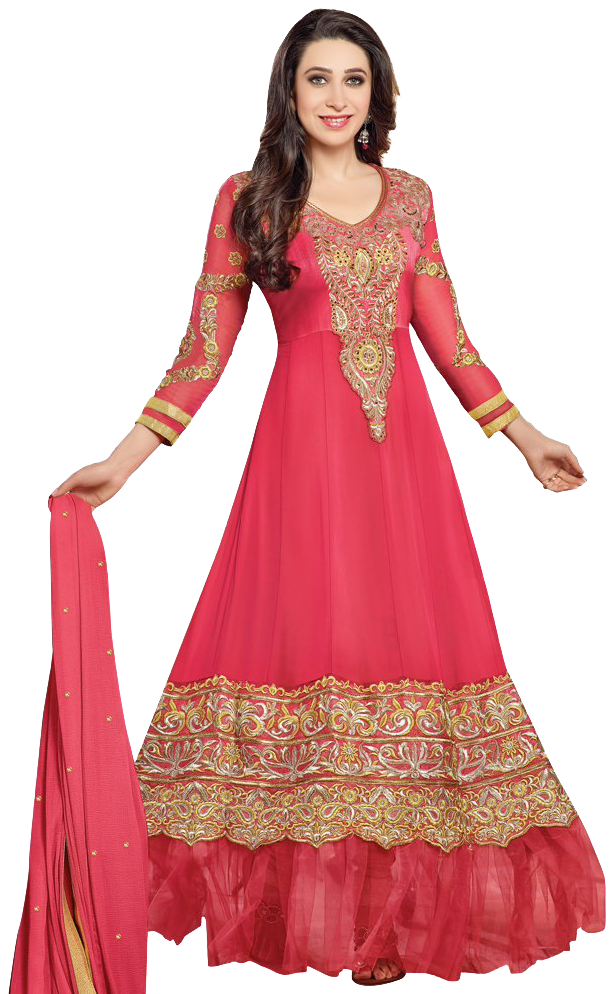
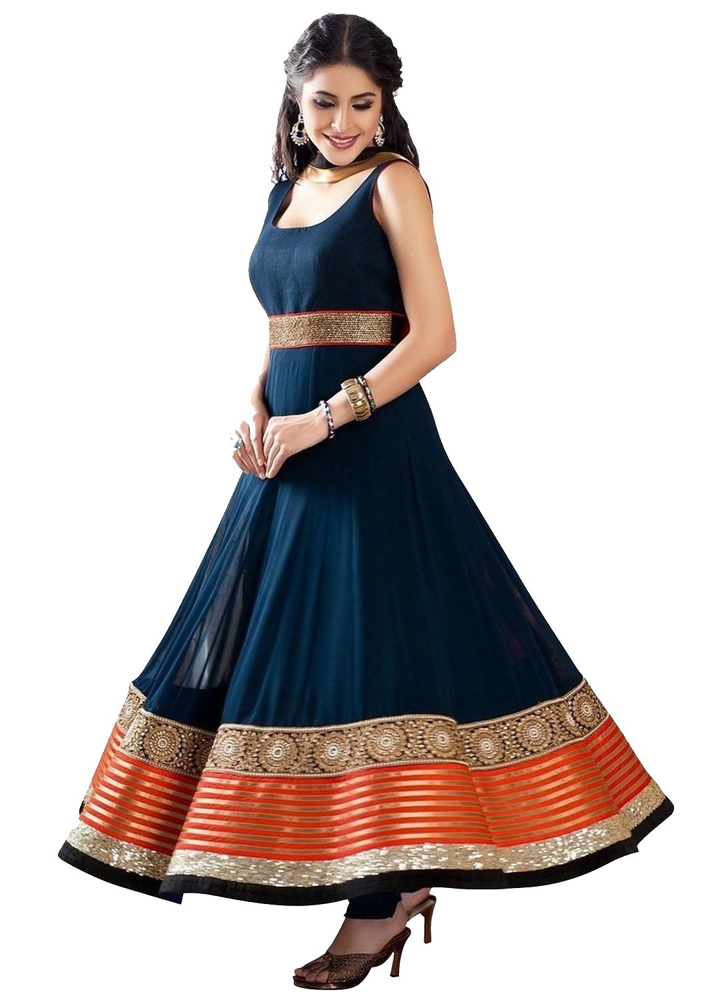
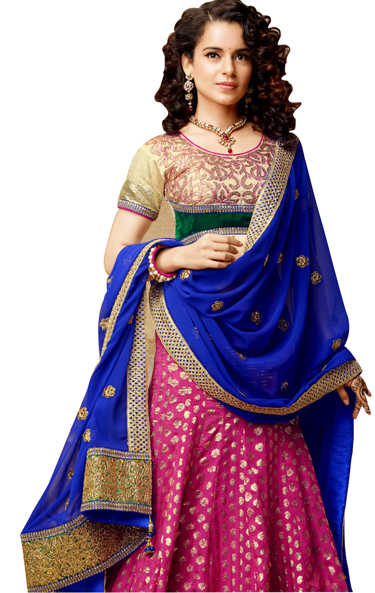
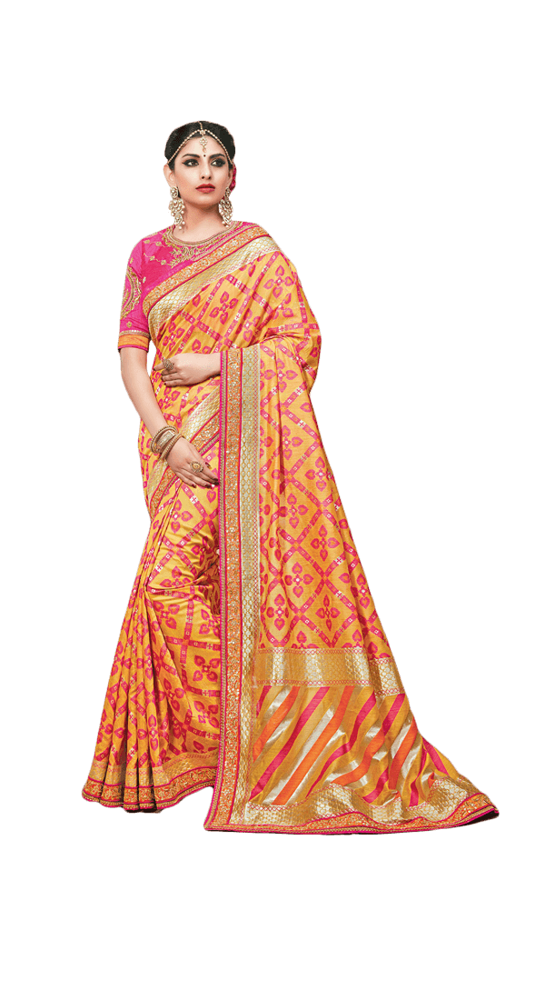

Kanjeevaram Sarees
VIESHARA
The pure mulberry silk and the Zari used in the making of Kanchipuram saris comes from South
India.
Kanjeevaram Sarees
Kanchipuram sarees, woven from pure mulberry silk, are found in myriad colours. These sarees
have borders and pallu in a contrasting colour with heavy gold weaving. Kanchipuram sarees
traditionally had designs representing simple gold lines or gold dots.
Silk Sarees
VIESHARA
Silk is smooth and gives a pleasant feeling to the skin and has a soft texture. Fabric sheen -
Good quality silk sarees have a unique shine and are visible in the light. It has a very subtle
shine which is not too harsh to the eyes.
Silk Sarees
The saris are woven from pure mulberry silk thread. The pure mulberry silk and the Zari used in
the making of Kanchipuram saris comes from South India. To weave a Kanchipuram sari three
shuttles are used. While the weaver works on the right side, his aide works on the left side
shuttle.

Churidar
VIESHARA
The anarkali churidar is probably the most well-known and well-loved at the moment. The anarkali
style kurta or kameez cannot be worn with any other type of pant so the churidar is crucial to
the outfit.
Churidar
A churidar salwar is a type of Indian trouser worn by both men and women. It has a distinctive
design that sets it apart from other pants like salwars or pajamas. It is usually fastened using
an adjustable drawstring and is loose and baggy at the top before tapering down into a tight-fit
at the bottom.

Full Churidars
VIESHARA
Churidar suits typically consist of a kameez, a long tunic, for women and a kurta. They are
matched with a full-length pair of slim-fitting pants.30
Full Churidars
Churidars

Half Sarees
VIESHARA
The festive season is Just around the corner, and we can't wait to serve you the best! Get this
beautiful karigari Half-Saree crafted in Pure handloom and Known for its lightweight
characteristics.
Airpod
Dyed in Royal Purple color with contrasting Dark Mustard Yellow in georgette
Butti detailing. The highlighting part of this lehenga is a woven Border on the lehenga and
blouse. Blouse Feature V-Neckline with Puff Sleeves. Accessories minimally and make this
Festival memorable.

Sarees
VIESHARA
Crafted with the richness of centuries-old pethani tradition, this regal Silk Lilac Leheriya
Saree is worth getting a spot in your bridal wardrobe. The tranquil Lilac foundation is designed
in a half-n-half design flaunting gold-silver zari jagged lines on the upper and gold-silver
zari brocade on the lower half to exude a contemporary phenomenon.
Sarees
The silver zari tissue
border, adorned with a single chic muniya motif series, and the tissue pallu, adorned with a
floral plant series, are dominant forces, snuggling the sheer gorgeousness of the drape. The
saree comes with a self-plain blouse